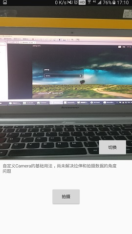
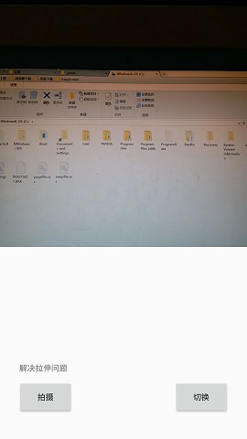

引子 在上一篇博客 自定义Camera（一） 里面主要讲解了如何使用自定义 Camera 来进行拍照，详解了 Camera 的初始化与释放，还有拍照之后的存储等。但是细心的朋友便会发现，这个 SurfaceView 里面呈现出来的画面，似乎有些拉伸了的感觉，与我们平时使用的系统相机有很大区别。这到底是为什么呢？
主要是因为，在一般情况下，Camera 所捕获到的数据，是以横屏为标准的。之前那个例子里面，我们通过设置了 mCamera.setDisplayOrientation(90) ，使得预览角度旋转了90°，我们这才看到了竖屏的画面。如果感兴趣，大家可以先不设置这句话，看看 SurfaceView 呈现的画面。我这里就不贴图片了，画面相当糟糕，可以说完全变形得不成样了。因为它是横屏数据。
设置 mCamera.setDisplayOrientation() 的参数，Google 提供了一个示例代码，通过当前的横竖屏状态，以及摄像头的Id，来设置这个参数：
1 2 3 4 5 6 7 8 9 10 11 12 13 14 15 16 17 18 19 20 21 22 23 24 25 26 27 28 29 30 public static int getDisplayOrientation (int cameraId, Activity activity) android.hardware.Camera.CameraInfo info = new android.hardware.Camera.CameraInfo(); android.hardware.Camera.getCameraInfo(cameraId, info); int rotation = activity.getWindowManager().getDefaultDisplay().getRotation(); int degrees = 0 ; switch (rotation) { case Surface.ROTATION_0: degrees = 0 ; break ; case Surface.ROTATION_90: degrees = 90 ; break ; case Surface.ROTATION_180: degrees = 180 ; break ; case Surface.ROTATION_270: degrees = 270 ; break ; } int result; if (info.facing == Camera.CameraInfo.CAMERA_FACING_FRONT) { result = (info.orientation + degrees) % 360 ; result = (360 - result) % 360 ; } else { result = (info.orientation - degrees + 360 ) % 360 ; } return result; }
从代码看出，影响预览角度的参数有两个，一个是通过 Display 对象获取到当前的横竖屏状态，另一个是 Camera 的 id（判断是前摄像头还是后摄像头）
当这个设置好后，我们便能看到一个不那么走样的画面了。。

可以看到，画面任然是压缩的，预览角度是正确了，但是 SurfaceView 这个控件的大小与 Camera 的支持大小并不符合，所以画面任有压缩感。
对此，官方Demo当中给出了一个自定义View，CameraPreview ，它作为 SurfaceView 的父View，可以任意设置其大小，这个布局会根据用户设置的大小，以及通过Camera获取的支持预览大小来动态设置 SurfaceView
为了简化和适应一般的开发需求，我们对这个 CameraPreview 稍微改造下，使用户不能随便设置宽高，就让宽度为屏幕宽度，高度宽度比为1：1，4：3，16：9这三种选择
CameraPreview 首先我们让其继承 ViewGroup：
1 public class CameraPreview extends ViewGroup implements SurfaceHolder .Callback
在构造函数初始化的时候创建 SurfaceView，并且获取了屏幕宽度：
1 2 3 4 5 6 7 8 public CameraPreview (Context context, AttributeSet attrs) super (context, attrs); mSurfaceView = new SurfaceView(getContext()); addView(mSurfaceView); mHolder = mSurfaceView.getHolder(); mHolder.addCallback(this ); screenWidth = getScreenWidth(); }
测量 接着重点来了，就是测量宽高了，这里贴出整个测量代码：
1 2 3 4 5 6 7 8 9 10 11 12 13 14 15 16 17 18 19 20 21 22 23 24 25 26 27 28 29 30 31 32 @Override protected void onMeasure (int widthMeasureSpec, int heightMeasureSpec) int height = 0 ; int width = screenWidth; switch (SCALE) { case SCALE_1_1: height = screenWidth; break ; case SCALE_4_3: height = (int ) (screenWidth * 1.333 ); break ; case SCALE_16_9: height = (int ) (screenWidth * 1.777 ); } if (mSupportedPreviewSizes != null ) { mPreviewSize = getOptimalPreviewSize(mSupportedPreviewSizes, width, height); } if (SCALE != SCALE_1_1) height = mPreviewSize.width; LayoutParams params = getLayoutParams(); if (params.width == LayoutParams.MATCH_PARENT && params.height == LayoutParams.MATCH_PARENT) { super .onMeasure(widthMeasureSpec, heightMeasureSpec); return ; } setMeasuredDimension(width, height); }
可以看出，这里设置了3个比例，宽度都是屏幕宽度。其中 mPreviewSize 是 Camera.Size 类型，通过 getOptimalPreviewSize() 函数，获取到了最接近 CameraPreview 宽高的比例，关于获取这个函数，我们待会再来详细说明。现在先说下 Camera.Size 需要注意的地方。
由于摄像头是以横屏作为标准，所以我们通常意义上以竖屏作为标准的宽高，和这个 Size 类型的宽高正好是相反的，也就是说，Size.width 作为我们要设置的高，Size.height 作为宽。在设置 SurfaceView 宽高，和设置 Camera支持的 parameters.setPreviewSize() 预览宽高的时候尤其要注意这一点。
获取Camera支持的最佳分辨率 接下来我们就来看看 getOptimalPreviewSize() 是如何获取到最佳 Camera.Size 的吧：
1 2 3 4 5 6 7 8 9 10 11 12 13 14 15 16 17 18 19 20 21 22 23 24 25 26 27 28 29 30 31 32 private Size getOptimalPreviewSize (List<Size> sizes, int w, int h) final double ASPECT_TOLERANCE = 0.1 ; double targetRatio = (double ) h / w; if (sizes == null ) return null ; Size optimalSize = null ; double minDiff = Double.MAX_VALUE; int targetHeight = h; for (Size size : sizes) { double ratio = (double ) size.width / size.height; if (Math.abs(ratio - targetRatio) > ASPECT_TOLERANCE) continue ; if (Math.abs(size.width - targetHeight) < minDiff) { optimalSize = size; minDiff = Math.abs(size.width - targetHeight); } } if (optimalSize == null ) { minDiff = Double.MAX_VALUE; for (Size size : sizes) { if (Math.abs(size.width - targetHeight) < minDiff) { optimalSize = size; minDiff = Math.abs(size.width - targetHeight); } } } return optimalSize; }
大致思路就是：遍历当前手机的 Camera 支持的 Size，获取高宽比例，与我们传入进来的 CameraPreview 的高宽比例进行比较，选出最接近 CameraPreview 高宽比例（代码中的调节参数 ASPECT_TOLERANCE，两个比例相差不超过0.1视为需要的Size）。然后在这些最佳的 Size 集合里进一步筛选（刚刚只选出了一些比例一样的分辨率），选出和目标高度最相近的一个 Size。如果前面这样筛选，没有一个匹配的，那么就放弃筛选比例，直接选择高度接近的。常见的高宽比就是1：1，4：3 和 16：9 了，尽量不要使用其它比例了。在这个自定义View里面，强制使用了这些比例了。
Note： 千万别去修改 Size 的内容，比如修改它的width等，否则将会带来一些无法预料的后果。
摆放控件 至此，测量部分全部搞定。接下来就是自定义View的老套路，在 CameraPreview 当中去摆放 SurfaceView:
1 2 3 4 5 6 7 8 9 10 11 12 13 14 15 16 17 18 19 20 21 22 23 24 25 26 27 28 @Override protected void onLayout (boolean changed, int l, int t, int r, int b) if (changed && getChildCount() > 0 ) { final View child = getChildAt(0 ); final int width = r - l; final int height = b - t; int previewWidth = width; int previewHeight = height; if (mPreviewSize != null ) { previewWidth = mPreviewSize.height; previewHeight = mPreviewSize.width; } if (width * previewHeight > height * previewWidth) { final int scaledChildWidth = previewWidth * height / previewHeight; child.layout((width - scaledChildWidth) / 2 , 0 , (width + scaledChildWidth) / 2 , height); } else { final int scaledChildHeight = previewHeight * width / previewWidth; child.layout(0 , (height - scaledChildHeight) / 2 , width, (height + scaledChildHeight) / 2 ); } } }
这段代码意思是把 SurfaceView 摆在此控件的正中间，没什么特别的地方。其实在本控件中，SurfaceView 的大小实际上总是和父控件一样大的。仔细分析下，是不是呢？
1 child.layout(0 , 0 , width, height);
代码大致分析完毕，现在就来用一下试试，测试效果如下图：

总结 到了这里，Camera 的拉伸问题总算得到了解决。可以愉快的写一些拍照的app啦~